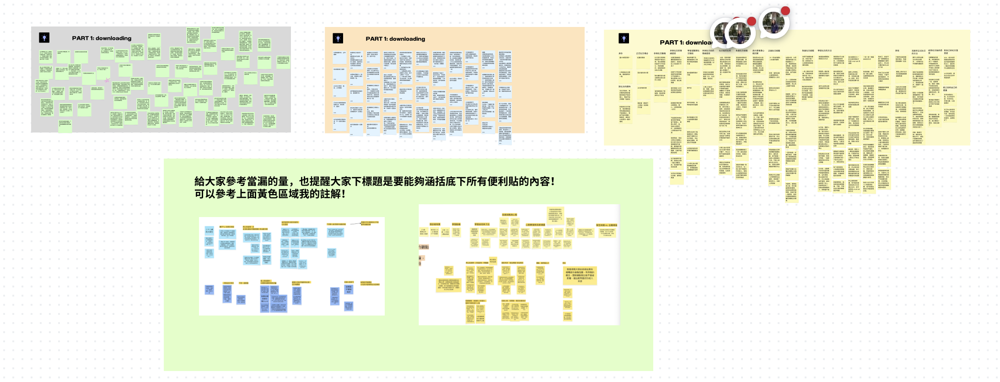
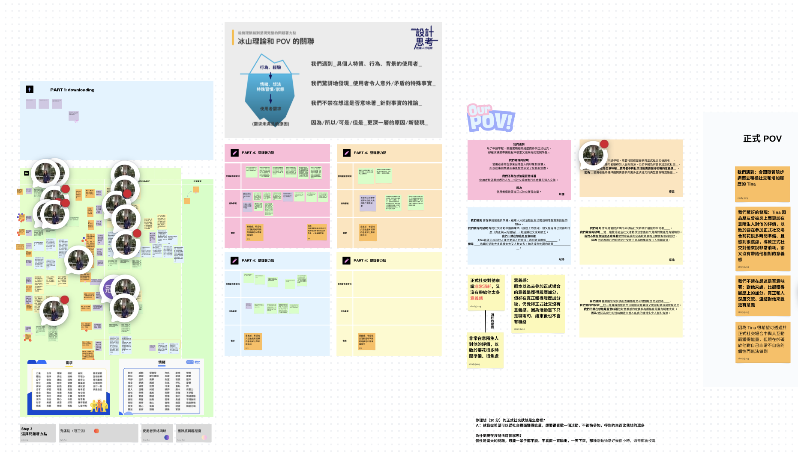
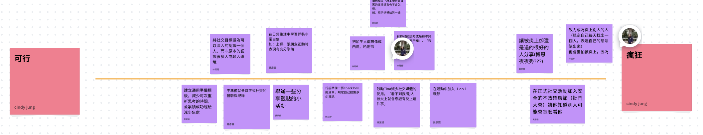

我們根據「焦慮程度」與「焦慮與社交的關聯性」兩個維度，將受訪者劃分為不同象限。我們特別鎖定在高壓正式場合中感到不知所措、且難以達到目標的極端使用者 (Extreme Users) 作為設計核心。

Fig 1. Download & Grouping
從大量訪談資料中萃取關鍵資訊脈絡。

Fig 2. Persona & POV
定義使用者在正式場合下的心理與行為模式 。

Fig 3. Prototype Iteration
建立可測試的假設並進行迭代優化。
高壓不安型使用者
行為特徵：為了累積履歷而積極參與正式社交，但因過度在意他人評價而感到極度消耗 。
我們發現：Tina 因為極度在意他人評價，導致正式社交對她而言是極大的消耗，卻沒有帶來相對的意義感。
真正的需求：比起單純獲得履歷上的加分，她更渴望透過深度交流與連結來獲得能量，但這卻受限於她目前的不自信。
本專案後續聚焦於如何將「正式社交」的規模縮小，轉化為可深度對話的管道，以滿足其對意義感的追求 。
在設計思考的過程中，我們意識到「將研究假設誤認為事實」是最大的風險。透過持續的測試與原型迭代（Step 0-4），我們學會如何處理抽象的需求，並根據使用者回饋靈活調整設計方向 。